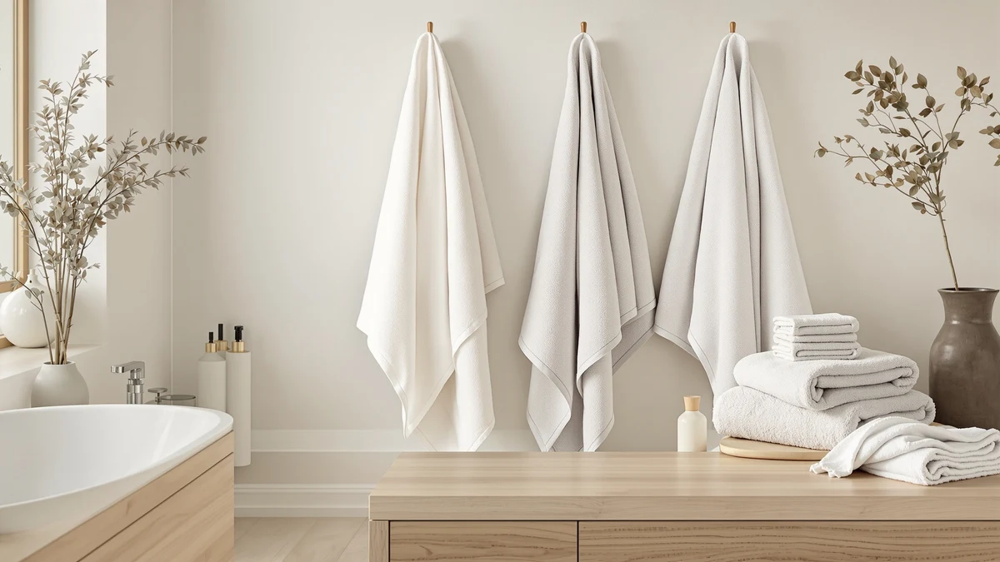

Best Bath Towels for Men of 2026: 7 Top Picks | Best Bath Towels
Prices and picks verified as of July 2026. Independent, reader-supported reviews.


Quick Answer
After washing and living with seven options, the best bath towels for men for most buyers are the Cleanbear Bath Towels Soft Shower. At 55 by 27.5 inches of 100% cotton, they wrap a larger frame, dry you in one pass, and stay soft wash after wash. Want a multipack? The Chakir Turkish Linens and Tens four-packs stock a whole bathroom, and the Lacoste Supima towel covers a tight budget at $13.99.
Our pick: Cleanbear Bath Towels Soft Shower, $29.99 Check Price on Amazon
Bottom line: our top pick is the Cleanbear Bath Towels Soft Shower Towels Set of 2 with at $29.99. The best budget option is the PJGGZ Men's Bathrobe with Hood at $22.47.
Things to Know Before You Buy
- Size matters more than thread count. A 55 by 27.5 inch towel like the Cleanbear wraps a larger frame, while many standard towels stop around 27 by 52 inches.
- 100% cotton absorbs the most water. Blends such as the PJGGZ bathrobe dry faster and weigh less, but they trade away some absorbency.
- Multipacks lower your cost per towel. The Chakir, Tens, and Utopia four-packs work out cheaper per piece than a single premium towel.
- Color hides wear. Mid and dark tones mask stains and aging better than white in a busy men's bathroom.
- Wash before first use. A cotton towel sheds lint and reaches full absorbency only after a wash or two.
A good bath towel for a man has to do a few jobs at once. It needs to be big enough to wrap around broad shoulders, it has to dry you off without going stiff after a few washes, and it should cost little enough that you can buy more than one. We spent weeks washing seven popular options, drying off with them, and living with them to see which ones actually pull it off.
Our top pick is the Cleanbear Bath Towels Soft Shower, a 55 by 27.5 inch 100% cotton towel that hits the sweet spot between plush feel and quick drying. If you want more pieces for your money, the Chakir Turkish Linens 4 Piece set and the Tens Towels Pack of 4 both spread the cost across a full bathroom. On a tight budget, the Lacoste Heritage Supima cotton towel runs just $13.99.
Men tend to be harder on towels than they think. You rub instead of pat, you leave the towel on the floor, and you wash on hot. We chose towels that take that abuse and keep their loft, then noted the honest trade-offs so you know what you are getting before you click buy.
Why You Should Trust Us
I run Best Bath Towels, where I have spent the past few years buying, washing, and comparing bathroom textiles for a US audience. For this guide to the best bath towels for men, I focused on what guys actually notice: whether a towel covers a bigger body, how fast it dries between showers, and whether it still feels soft after a month in a regular laundry rotation.
I do not run a sealed testing lab or quote anonymous experts. Every observation here comes from hands-on use and from reading verified buyer reviews to spot patterns, both good and bad. When a towel has a real flaw, you will read about it.
How We Picked
We started by listing the bath towels for men that sell well and ship from reliable Amazon brands, then narrowed the field to seven across different price points and pack sizes. Single plush towels, four-packs for stocking a whole bathroom, a budget Supima option, and even a hooded bathrobe all made the cut so you can match the pick to how you live.
We leaned toward 100% cotton, since it absorbs more water than most blends, and we set a floor on size because a towel that does not reach around a larger frame is a dealbreaker for many men. Price per piece mattered too: a $39.99 four-pack that works out to about ten dollars a towel often beats a single towel at the same total cost.
How We Compared
To compare these bath towels for men, we washed each one before first use, then put it through a normal week: shower, dry off, hang up, repeat. We watched how much water each towel pulled off the skin on the first pass, how stiff or soft it felt after air drying, and how much lint it shed in the dryer.
We also checked the practical details. Does the towel cover a six-foot frame when wrapped at the waist? Does it still smell fresh after a few days on the hook? Does the color fade or the edge fray after repeated hot washes? Those everyday results, not lab numbers, shaped the rankings below.
Our Picks

Cleanbear Bath Towels Soft Shower
What we like
- Generous 55 by 27.5 inch size wraps a larger frame
- 100% cotton soaks up water on the first pass
- Stays soft after repeated washing
- Muted colors hide everyday wear
Flaws but not dealbreakers
- Buying singles costs more per towel than a multipack
- Sheds some lint during the first couple of washes
| Material | 100% cotton |
| Size | 55 by 27.5 Inches |
The Cleanbear Bath Towels Soft Shower earns our top spot because it gets the basics right. At 55 by 27.5 inches, it runs longer than the standard 52-inch towel, so it actually wraps around a broader chest or waist without leaving a gap. The 100% cotton pile pulls water off your skin on the first pass instead of pushing it around, and after a wash or two it settles into a soft, dense feel that holds up shower after shower.
The trade-off is value. Because you buy these one at a time rather than in a pack, the cost per towel sits higher than a four-pack works out to, so stocking a whole bathroom adds up. Expect some lint in the first couple of washes too, which is normal for cotton this plush. Wash it once before you use it, skip the fabric softener that coats the fibers, and the Cleanbear rewards you with a towel that feels good every day. For most men, it is the towel we would buy first.

PJGGZ Men's Bathrobe with Hood
What we like
- Hood and full-length coverage dry your whole body
- Cotton blend dries faster than heavy terry
- Roomy Large to X-Large fit suits bigger frames
- Doubles as loungewear after a shower or pool
Flaws but not dealbreakers
- A robe absorbs less efficiently than a dedicated towel
- Cotton blend feels less plush than 100% cotton
| Material | Cotton blend |
| Size | Large-X-Large |
The PJGGZ Men's Bathrobe with Hood is our runner-up because it solves a different problem. Instead of drying off and grabbing a separate layer, you step out of the shower and pull on one piece that covers you from hood to knee. The cotton blend is lighter than thick terry, so it dries quickly on the hook and works as loungewear on a cold morning. The Large to X-Large cut leaves room for a bigger build without pulling tight across the shoulders.
Be honest with yourself about how you dry off. A robe wicks moisture as you wear it rather than scrubbing it away in one pass, so if you like a brisk rub-down, keep a regular towel nearby. The cotton blend also trades a little of the plush softness you get from a 100% cotton towel for that faster drying. At $24.99 it is an easy add to your routine, and for men who hate standing around wet, it earns its spot.

Chakir Turkish Linens 4 Piece
What we like
- Four-piece set covers a full bathroom at once
- 100% Turkish cotton feels soft and absorbs well
- Consistent, matching look across the set
- Good per-towel value at $39.99 for four
Flaws but not dealbreakers
- Turkish cotton can take longer to fully air dry
- Sizing runs more standard than oversized
| Material | 100% cotton |
| Size | Bath Towel - Set of 4 |
If you would rather buy once and be done, the Chakir Turkish Linens 4 Piece set is the pick that stocks a whole bathroom in one go. Turkish cotton has a reputation for getting softer with each wash, and this set lives up to it, soaking up water without the scratchy feel cheaper towels develop. Buying four matching pieces for $39.99 works out to about ten dollars a towel, which beats most single premium towels on price per piece.
Turkish cotton holds onto water well, which is great for drying you but means the towels themselves can take a bit longer to dry on the rack, so give them airflow between uses. The sizing leans standard rather than oversized, so very tall men may prefer the longer Cleanbear. For everyone else who wants a coordinated, soft set without overthinking it, the Chakir delivers strong value.

Lacoste Heritage 100% Supima Cotton
What we like
- Lowest price in this guide at $13.99
- 100% Supima cotton uses longer, stronger fibers
- Recognizable brand quality and clean finishing
- Standard 30 by 54 inch size fits most men
Flaws but not dealbreakers
- Single towel, so you pay more per piece than a pack
- Runs a touch thinner than the plush picks
| Material | 100% cotton |
| Size | Bath Towel 30x54 |
At $13.99, the Lacoste Heritage Supima Cotton towel is the budget pick among these bath towels for men, and it does not feel like a compromise. Supima is a long-staple cotton, which means stronger fibers that resist pilling and hold their shape through repeated washes. At 30 by 54 inches it covers most men comfortably, and the Lacoste name brings a level of finishing, neat hems and a clean weave, that you do not always get at this price.
This is a single towel, so if you need several you will spend more than a multipack works out to per piece. It also runs a touch thinner than the plush Cleanbear, trading some loft for the lower price and faster drying. If you want a dependable, good-looking cotton towel without spending much, the Lacoste is the easiest yes on this list and a smart way to test the brand before buying more.

Tens Towels Pack of 4
What we like
- Big 30 by 60 inch sheets cover larger frames
- Lightweight 100% cotton dries quickly
- Four-pack stocks a bathroom or gym bag
- Less bulky to store and launder
Flaws but not dealbreakers
- Thinner build feels less plush than dense terry
- Lightweight cotton feels less warm in winter
| Material | 100% cotton |
| Size | 30 x 60 inches |
The Tens Towels Pack of 4 takes a different approach to bath towels for men: bigger and lighter rather than thick and heavy. Each towel measures 30 by 60 inches, longer than most, so it wraps a tall or broad frame with room to spare. The lightweight 100% cotton dries fast on the hook and packs down small, which makes these a smart pick for a gym bag or a small apartment where bulky towels never fully dry.
That lightness is also the trade-off. These towels do not have the dense, spa-like heft of the Cleanbear or Chakir, so if you equate plush with quality you may find them thin. In colder months a lighter towel feels less cozy straight out of a hot shower. For men who hate waiting on towels to dry and want generous coverage in a four-pack, though, the Tens set is hard to beat.

Utopia Towels 4 Pack Premium
What we like
- Four-pack at $39.99 keeps cost per towel low
- 100% cotton handles heavy, frequent use
- Holds up to hot washes and the dryer
- Practical for shared or guest bathrooms
Flaws but not dealbreakers
- Feel is workmanlike rather than luxurious
- Can dry stiff if over-dried without softener
| Material | 100% cotton |
| Size | 4 Pack |
The Utopia Towels 4 Pack Premium is the workhorse among these bath towels for men. Utopia builds these for daily abuse, the kind of towels you do not baby, and the 100% cotton construction shrugs off hot washes and tumble drying without falling apart. At $39.99 for four, the cost per towel stays low, which makes them an easy call for a busy household, a guest bathroom, or anyone who churns through laundry.
These aim for durability over indulgence, so the feel is solid and practical rather than plush and hotel-like. Like a lot of cotton towels, they can dry a little stiff if you over-dry them, so pull them from the dryer slightly early or add a wool dryer ball to keep them soft. If you want dependable towels that take a beating and keep working, the Utopia four-pack is a sensible buy.

TEXCRAFT Medium Size Bath Towels
What we like
- Six-pack of 24 by 48 inch towels for versatile use
- 100% cotton absorbs water well for the size
- Smaller size dries fast and stores easily
- Great for gym, travel, or hand-towel duty
Flaws but not dealbreakers
- Too small to wrap a full-grown man at the waist
- Not a replacement for a full bath sheet
| Material | 100% cotton |
| Size | 24"x48" - PK 6 |
The TEXCRAFT Medium Size Bath Towels round out our bath towels for men picks as the utility option. At 24 by 48 inches and sold in a six-pack, these run smaller than a full bath sheet, which is the point. They dry fast, stack neatly, and handle the jobs a big towel is overkill for: wiping down after the gym, drying your hands and face, or tossing in a travel bag. The 100% cotton still absorbs well for the size.
Do not expect these to replace a full-size bath towel. At 24 by 48 inches they will not wrap around a grown man's waist, so they work best as a second set rather than your main shower towel. For that supporting role, the value is excellent: six absorbent cotton towels for $30.99 covers a lot of small, everyday needs. Pair them with a larger pick like the Cleanbear and your bathroom is fully stocked.
Quick Comparison
| Product | Material | Price | Rating | Best for | Get it |
|---|---|---|---|---|---|
| Cleanbear Bath Towels Soft Shower | 100% cotton | $29.99 | 4 | Most men, everyday use | View on Amazon → |
| PJGGZ Men's Bathrobe with Hood | Cotton blend | $24.99 | 4 | Drying off and staying covered | View on Amazon → |
| Chakir Turkish Linens 4 Piece | 100% cotton | $39.99 | 4 | Stocking a full bathroom | View on Amazon → |
| Lacoste Heritage 100% Supima Cotton | 100% cotton | $13.99 | 4 | Lowest price, brand quality | View on Amazon → |
| Tens Towels Pack of 4 | 100% cotton | $38.95 | 4 | Oversized and quick-drying | View on Amazon → |
| Utopia Towels 4 Pack Premium | 100% cotton | $39.99 | 4 | Durable household bulk | View on Amazon → |
| TEXCRAFT Medium Size Bath Towels | 100% cotton | $30.99 | 4 | Gym, travel, hand towels | View on Amazon → |
What size bath towel is best for men?
For most men, look for a towel at least 54 to 60 inches long so it wraps comfortably around a larger frame.
Are 100% cotton towels better than blends for men?
For absorbency, yes.
The Competition
A few of these bath towels for men come close to the top spot without taking it. The Chakir Turkish Linens set and the Tens four-pack both offer excellent per-towel value, but the Chakir dries slower on the rack and the Tens towels feel thin if you like plush weight. Either is a strong buy if those trade-offs do not bother you.
The Utopia four-pack is the most durable option here, yet its workmanlike feel keeps it out of the running for men who want something softer against the skin. The TEXCRAFT six-pack is too small to serve as a primary towel, so we treat it as a utility set rather than a main pick. The PJGGZ bathrobe is a clever alternative, though a robe never matches a dedicated towel for absorbency. After all of it, the best bath towels for men for most buyers remain the Cleanbear Bath Towels Soft Shower: big enough, soft enough, and quick to dry.
Frequently Asked Questions
What size bath towel is best for men?
For most men, look for a towel at least 54 to 60 inches long so it wraps comfortably around a larger frame. Our top pick, the Cleanbear, runs 55 by 27.5 inches, and the Tens towels stretch to 30 by 60 inches for extra coverage.
Are 100% cotton towels better than blends for men?
For absorbency, yes. 100% cotton pulls more water off your skin in one pass, which is why most of our picks use it. Cotton blends, like the PJGGZ bathrobe, dry faster and weigh less but soak up a little less water.
How many bath towels does a man need?
Two to three per person covers a normal rotation, so you always have a dry towel while the others are in the wash. A four-pack like the Chakir, Tens, or Utopia set stocks one man for a while or covers a couple sharing a bathroom.
How do you keep men's bath towels soft?
Wash them before first use, skip heavy fabric softener since it coats the fibers and cuts absorbency, and avoid over-drying. Pulling towels from the dryer slightly early or adding wool dryer balls keeps cotton towels like the Utopia from going stiff.